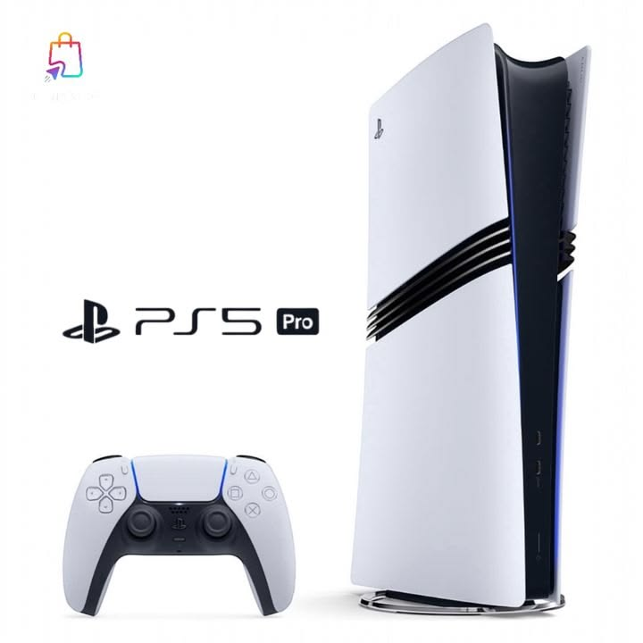
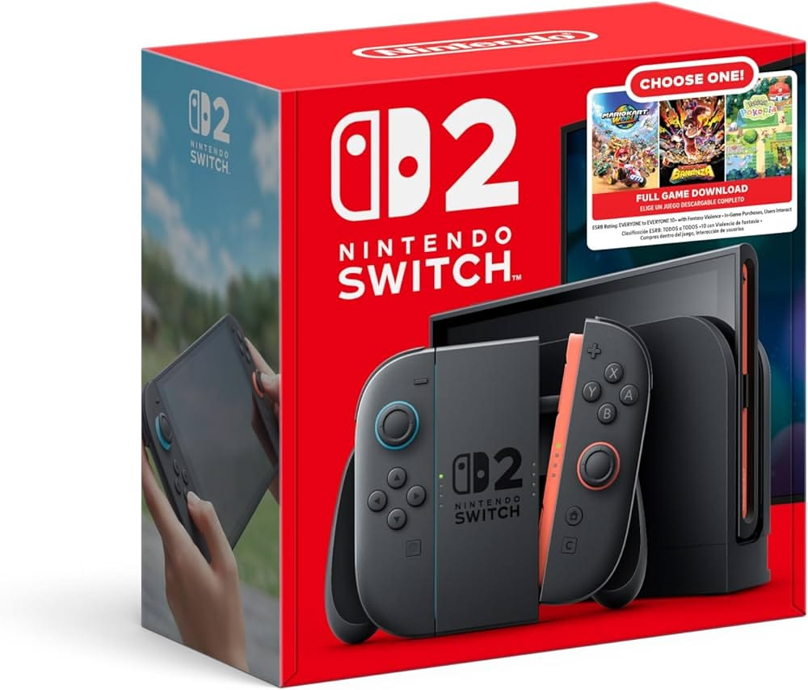

PlayStation 5
O PlayStation 5 se destaca pelo alto desempenho, gráficos impressionantes e carregamento ultrarrápido. Com design moderno, controle DualSense imersivo e uma excelente variedade de jogos exclusivos, oferece uma experiência de nova geração envolvente e fluida, sendo uma ótima escolha para quem busca qualidade, inovação e entretenimento.
Características
| Potencia | 98 |
| Qualidade | 97 |
| Durabilidade | 90 |
| Conectividade | 94 |
| Velocidade | 97 |
| Media geral | 95.2/100 |

Xbox Series X 1TB O Xbox Series X oferece alto desempenho, gráficos impressionantes em 4K e carregamento extremamente rápido graças ao seu SSD de 1 TB. Com design moderno, excelente capacidade de processamento e ampla biblioteca de jogos, é uma ótima escolha para quem busca uma experiência de nova geração, potência e qualidade nos games.
Características
| Potencia | 88 |
| Qualidade | 89 |
| Durabilidade | 87 |
| Conectividade | 88 |
| Velocidade | 94 |

Nintendo Switch 2
O Nintendo Switch 2 se destaca pelo desempenho aprimorado, gráficos mais avançados e tela de alta qualidade. Com design moderno, controles versáteis e uma excelente variedade de jogos, oferece uma experiência divertida e envolvente, tanto no modo portátil quanto na TV, sendo uma ótima escolha para quem busca inovação, praticidade e entretenimento.
Características
| Potencia | 75 |
| Qualidade | 80 |
| Durabilidade | 85 |
| Conectividade | 85 |
| Velocidade | 90 |
Xbox Series S de 1 TB
O Xbox Series S de 1 TB se destaca pelo alto desempenho, gráficos de qualidade e carregamento rápido. Com design compacto e moderno, armazenamento amplo e acesso a uma enorme variedade de jogos pelo Xbox Game Pass, oferece uma experiência fluida e envolvente, sendo uma ótima escolha para quem busca desempenho, praticidade e entretenimento.
Características
| Potencia | 70 |
| Qualidade | 82 |
| Durabilidade | 90 |
| Conectividade | 80 |
| Velocidade | 85 |